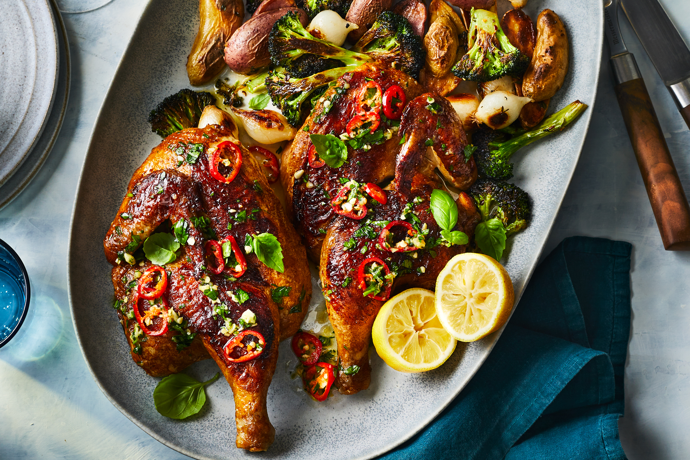

Roast Chiken

Ingredienten
- 4 quarts water
- 1 ½ cups plus 1 tablespoon kosher salt, divided
- ¼ cup granulated sugar
- 1 (4-pound) whole chicken, backbone removed, split through breastbone
- 6 medium garlic heads
- ⅓ cup plus 7 tablespoons olive oil, divided
- ⅓ cup Dijon mustard
- thyme sprigs, divided
- pound fingerling potatoes, halved lengthwise
- ½ cups pearl onions or 4 shallots, halved
- 1 rosemary sprig
- medium broccoli heads, stemmed and cut into 1/2-inch-thick planks
- 2 teaspoons crushed red pepper, or more to taste
- ½ tablespoons fresh lemon juice
- ½ cup Chile-Basil Vinaigrette, plus more for serving
- ¼ cup loosely packed fresh basil leaves
Bereiding
- Bring 4 quarts water to a simmer in a large stockpot over medium-high. Remove from heat; whisk in 1 1/2 cups salt and sugar until dissolved. Let cool completely, about 1 hour. Add chicken; cover and refrigerate at least 30 minutes or up to 8 hours or overnight. Remove chicken from brine; discard brine. Place chicken, skin side up, on a wire rack set inside a baking sheet; pat chicken dry. Refrigerate chicken, uncovered, 8 hours or overnight
{kind=link}
{kind=link}
{kind=link}